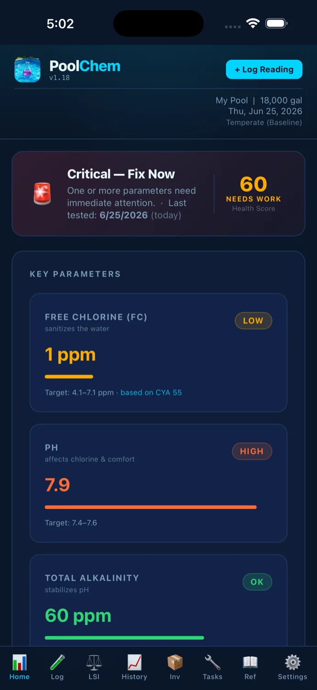
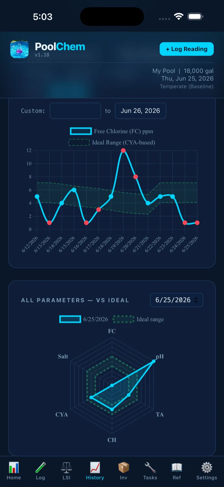
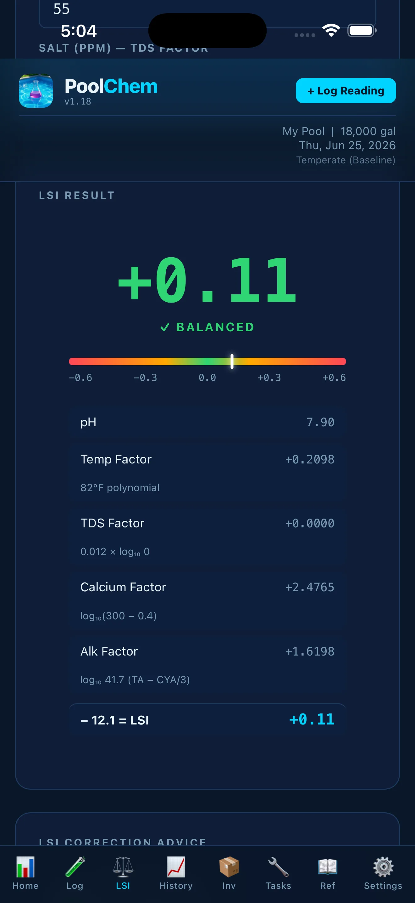
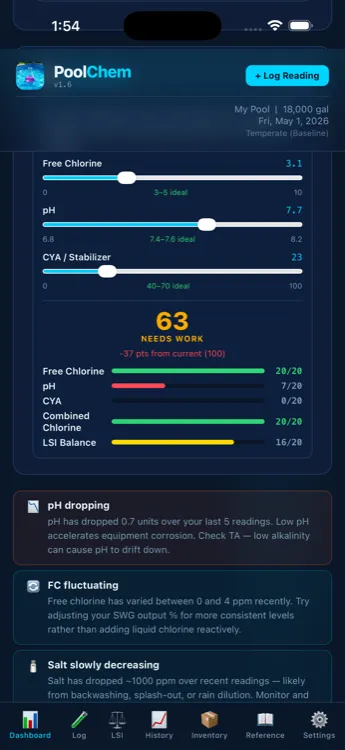

Plain-language answers for cloudy water, chlorine that won't hold, pH, alkalinity, and water balance — plus an iPhone app that tracks your readings to catch problems before they come back.
Pick a symptom — we'll explain the cause and walk you through the fix.
Troubleshooting playbooks and a plain-language reference. Pick the one that matches your situation.
Diagnose your symptoms, then follow the step-by-step fix.
What FC, TC, and CC readings mean, how much to add, and why chlorine drops.
The 5 numbers that matter, how to balance them, and the chemicals you actually need.
Plain-language definitions for every pool chemistry term. CYA, LSI, chloramines, free chlorine, and more.
Direct, plain-language answers — backed by tested chemistry, not pool-store sales pitches.
FC, TC, and CC at a glance — what's normal, what's low, and when to act.
See the chart →Your CYA level sets your chlorine target. Here's the chart that ties them together.
See the chart →What FC, CC, and TC actually mean — and which number tells you the pool is safe.
Learn the difference →Which one to use for pH, which one for alkalinity, and why they're not interchangeable.
Get the answer →Spoiler: no. Here's what does, and how to keep CYA under control.
Get the answer →Why morning readings beat afternoon ones, and when to retest after rain or shock.
Read the guide →The most common causes — and how to clear it without dumping in more chemicals.
Read the guide →The water-balance number that decides whether your pool corrodes or scales. Explained simply.
Read the explainer →The ideal free chlorine (FC) level depends on your cyanuric acid (CYA). At CYA 30, aim for 2–4 ppm. At CYA 50, aim for 4–6 ppm. The rule of thumb is FC should be at least 7.5% of your CYA level. See the full FC/CYA chart →
No — total chlorine is free chlorine plus combined chlorine, so TC should always be equal to or higher than FC. If your test shows TC below FC, the reading is a testing error. Try retesting with fresh reagents or a different kit. Free chlorine vs total chlorine explained →
High chlorine with cloudy water usually means high CYA is locking up your chlorine, or high pH/alkalinity is causing minerals to precipitate. Your FC reading looks fine, but the effective chlorine may be too low. Check CYA first. Diagnose cloudy pool water →
2–3 times per week during swim season, weekly in the off-season. Test in the morning for the most accurate baseline — UV breaks down chlorine throughout the day. Always test after heavy rain, pool parties, or adding chemicals. Full testing schedule →
Keep pH between 7.4 and 7.8, with 7.5–7.6 being the sweet spot. Below 7.2, water becomes corrosive and irritates skin and eyes. Above 7.8, chlorine loses effectiveness and calcium can precipitate out, causing cloudy water and scale. Full pH guide →
It depends on your pool volume, current FC level, and target FC (which is set by your CYA). As a rough guide, 1 oz of liquid chlorine (12.5%) raises FC by about 1 ppm per 1,000 gallons. PoolChem Tracker calculates the exact dose for you. Chlorine dosing guide →
One-off answers fix today's problem. Tracking your chemistry over time prevents the next one.
Enter your test results — FC, pH, alkalinity, CYA, calcium, temperature. Same workflow you already use.
Charts show how your chemistry shifts week to week — so a drift toward cloudy or scale is obvious before you can see it in the water.
Based on your pool size and current readings, not generic charts. Full LSI with CYA-corrected alkalinity — the accurate calculation, not the simplified one.
A health score and trend view tell you what to fix before "cloudy water again" turns into another weekend lost.
Everything you need to keep your pool balanced — built for iPhone.




Use your existing test kit or strips as usual.
Enter your results — FC, pH, alkalinity, and more.
See exactly what to add and how much, tailored to your pool.
Watch your water improve with trends and health scores.
Get an instant 0–100 score based on five key parameters. Know at a glance if your water is balanced.
Full LSI with CYA-corrected alkalinity, polynomial temperature factors, and salt-adjusted TDS — the accurate version, calculated automatically.
Exact chemical amounts based on your pool size, current readings, and the FC/CYA relationship. No more guessing or Googling.
See how your chemistry changes over time with interactive charts. Spot patterns before they become problems.
Set reminders for water tests, filter cleaning, SWG cell maintenance, and chemical inventory checks.
All data stays on your device. No account required, no cloud, no tracking. Works without an internet connection.
Explore the live demo with sample pool data — or enter your own readings.
Start free. Upgrade once, keep it forever. No subscriptions.
No. PoolChem Tracker works completely offline. All data is stored locally on your device.
Yes. We don't collect any data, require an account, or use analytics. Your readings never leave your device.
All pool types — chlorine, salt water (SWG), and more. Configure your pool settings and get tailored recommendations.
The Langelier Saturation Index measures water balance — whether your water will corrode surfaces or form scale. Most calculators use a simplified formula. PoolChem Tracker uses the full equation with CYA-corrected alkalinity for accurate results.
Absolutely. The free version includes dosing recommendations, health scores, and up to 5 readings. Upgrade only when you need unlimited history and charts.
Yes. PoolChem Tracker runs on iPhone and iPad with iOS 26 or later.
Join pool owners who've stopped guessing and started tracking.